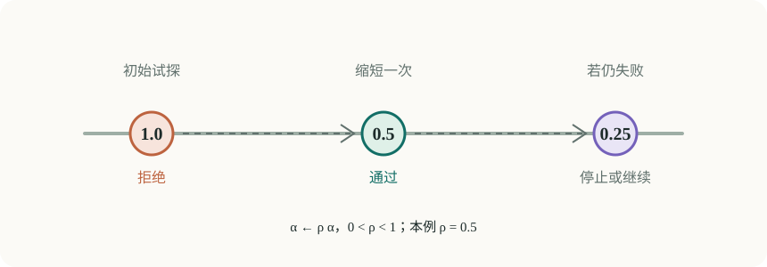

3.1.3 充分下降与回溯：从大步长逐次缩短
回溯线搜索不是盲目地把步长缩小，而是用一个可证明会在有限次内通过的充分下降条件，控制每次迭代的函数评估成本。
为什么只看函数值下降仍不够
设当前点 xk、下降方向 pk，并定义 φ(α)=f(xk+αpk)。方向下降意味着 φ′(0)<0，因此存在足够小的正步长使函数值下降。但仅检查 φ(α)<φ(0) 过于宽松：一个极小的 α 也能通过，函数值虽下降，迭代却可能几乎停滞。
Armijo 条件把“足够下降”量化为与初始斜率和步长成正比的下降量。给定 c∈(0,1)，要求候选点落在起点切线模型的充分下降一侧。
Armijo 条件的几何意义
右侧是斜率为 cφ′(0) 的直线。由于 φ′(0)<0 且 c<1，这条线比原函数在 α=0 处的切线更平缓。候选步只有在函数曲线低于该线时才接受。常用的 c 值很小，例如 10⁻⁴；这意味着只要求一小部分线性预测下降真正兑现。

回溯算法与有限终止
回溯只使用 Armijo 条件：先选初始步长 ᾱ>0，再选择缩短因子 ρ∈(0,1)。若候选步不满足条件，就令 α←ρα 并重试。Newton 与拟 Newton 方法常从 ᾱ=1 开始；最速下降或共轭梯度方法也可以使用其他初始步长。
- 输入下降方向 pk、初始步长 ᾱ、ρ∈(0,1) 和 c∈(0,1)。
- 计算 φ(α)，检查 Armijo 不等式。
- 若失败，缩短 α←ρα；若通过，接受 αk=α。
若每次缩短比例固定为 ρ，接受步长不会比上一个被拒绝的步长小超过一个 ρ 因子。若 ρ 在固定区间 [ρlo,ρhi]⊂(0,1) 内变化，也可以保留类似的上下界控制。
为什么足够小的步长一定通过
因为 φ 在 0 处可微，
最后一个严格不等式成立，是因为 φ′(0)<0 且 c<1。于是当 α 足够小时，(φ(α)−φ(0))/α 会小于 cφ′(0)，也就是 Armijo 条件成立。几何序列 αj=ρjᾱ 会趋于 0，因此在精确算术下，回溯经过有限次试探后必然遇到一个可接受步长。
实现提醒：有限终止定理依赖下降方向、可微性和精确的条件检查。浮点程序仍应设置最大试探次数、非有限数检查和最小步长保护；这些是数值工程防护，不替代理论假设。
一次完整的回溯过程
取 φ(α)=(4α−2)²、φ(0)=4、φ′(0)=−16，c=10⁻⁴，ᾱ=1，ρ=0.5。第一次试探 α=1 时 φ(1)=4，而 Armijo 上界约为 3.9984，因此拒绝。第二次 α=0.5 时 φ(0.5)=0，上界约为 3.9992，因此接受。这里两次函数值试探就结束；这只是一个容易手算的示例，不代表一般问题只需两次评估。
交互：改变初始步长与缩短比例
固定 φ(α)=(4α−2)² 与 c=10⁻⁴。调整初始步长和 ρ，观察回溯次数、接受步长与最终函数值。
实时计算
Python：可复现的数值检查
程序使用一个最大试探次数作为数值防护，并将每次试探都计入函数评估次数。对固定示例，默认参数会拒绝 α=1、接受 α=0.5。
"""Armijo backtracking with a finite iteration guard."""
def phi(alpha: float) -> float:
return (4.0 * alpha - 2.0) ** 2
def dphi0() -> float:
return -16.0
def armijo(alpha: float, c: float = 1e-4) -> bool:
return phi(alpha) <= phi(0.0) + c * alpha * dphi0()
def backtracking(alpha0: float = 1.0, rho: float = 0.5,
c: float = 1e-4, max_trials: int = 100):
if alpha0 <= 0.0 or not (0.0 < rho < 1.0) or not (0.0 < c < 1.0):
raise ValueError("require alpha0 > 0 and rho,c in (0,1)")
alpha = alpha0
for trials in range(1, max_trials + 1):
if armijo(alpha, c):
return alpha, trials
alpha *= rho
raise RuntimeError("backtracking exceeded max_trials")
if __name__ == "__main__":
alpha, trials = backtracking()
print(f"accepted alpha={alpha:.6f} after {trials} trials")
print(f"phi(alpha)={phi(alpha):.6f}")
assert alpha == 0.5
assert trials == 2
assert armijo(alpha)
assert not armijo(1.0)思考：有限终止证明中，为什么必须有 φ′(0)<0？如果 p_k 不是下降方向，简单地不断缩短 α 能否保证 Armijo 通过？